HABILIDADES DE PERCEPCIÓN
¿A que hace referencia una habilidad de percepcion?
Segun Rosner, la habilidad de percepcion es aquella capacidad de identificar tareas pertinentes y rasgos concretos de una información sensorial, esto lo utilizamos para manipular, reconocer y recordar todo la informacion que recibimos por la vision.

Tips para mejorar tus habilidades de percepcion
- Resuelve laberintos
- Utiliza rompecabezas
- Realiza test que te permitan identificar tu nivel de percepcion
- Lee libros o cuentos
Link de reunion online:
Unete a esta reunion e interactua con personas que buscan perfeccionar las mismas habilidades que tu.
https://meet.google.com/rau-yupf-xtr"Cuando cambias tu actitud,
cambia tu energia, tu expresion y
percepcion del mundo"